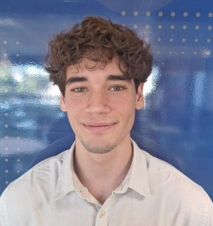

Pré-tarefa · Entrevista com lideranças
Vinícius da Luz
Estudante de Engenharia da Computação no Ibmec RJ (5º período). Meu interesse por tecnologia começou na infância, quando meu pai me deu um kit de Arduino e desde então eu comecei a criar projetos por curiosidade. Hoje busco transformar essa curiosidade em construção de sistemas confiáveis em escala.

Quem sou e minha trajetória
Formação
Engenharia da Computação no Ibmec RJ, com interesse em sistemas, infraestrutura e engenharia aplicada.
Experiências
Projetos com Arduino, robótica e visão computacional. Aprendi na prática como pequenos erros podem quebrar sistemas inteiros.
Como aprendo
Aprendo construindo. Gosto de testar, errar, investigar e melhorar até o sistema funcionar de forma consistente.
O que me aproximou de DevOps & SRE
Mindset de Engenharia
Em sistemas embarcados, aprendi que pequenos erros podem parar tudo. Isso me levou a pensar mais em como entender falhas e sistemas como um todo.
- Entendimento de falhas
- Pensamento de sistema completo
- Aprendizado prático
- Resolução estruturada de problemas
Conexão com a Globo
Quero aprender como sistemas críticos funcionam em produção e contribuir com uma mentalidade prática de engenharia e confiabilidade.
- Infraestrutura em escala real
- Observabilidade e confiabilidade
- Automação de processos
- Evolução como engenheiro
Projetos & Formação
Projetos
Arduino, automação, irrigação e visão computacional.
Certificações
IoT, web e fundamentos de desenvolvimento.
Interesses
SRE, infraestrutura, sistemas distribuídos e engenharia de software.
Formação
Engenharia da Computação · Ibmec RJ · 2023–2027
Meu alinhamento com a Globo
Impacto
Me motiva trabalhar em sistemas que impactam milhões de pessoas todos os dias.
Escala
Tenho interesse em entender e construir sistemas que operam em grande escala com confiabilidade.
Crescimento
Quero evoluir tecnicamente em um ambiente real, ao lado de profissionais experientes.